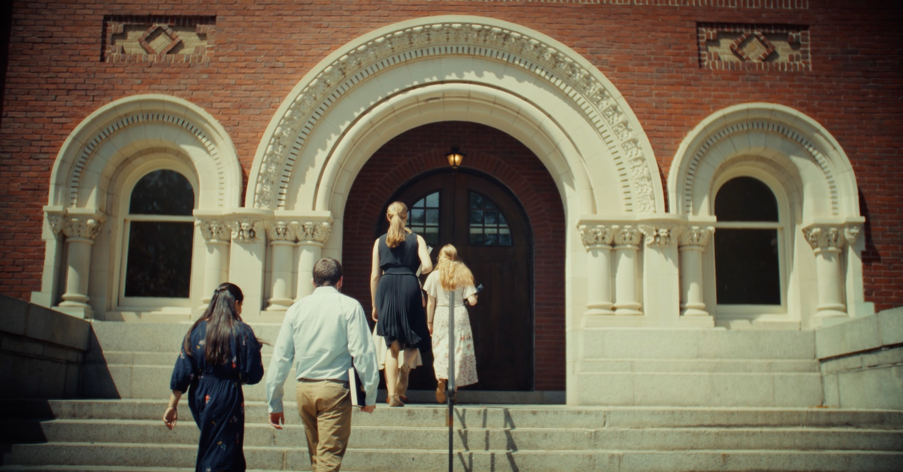
In the classroom
Join a class
Take a seat at the seminar table. Listen in, or join the conversation — the tutors will be glad to hear from you.
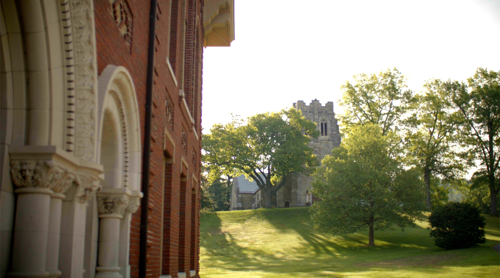
Thomas Aquinas College · New England
Northfield, Massachusetts · Plan a visit
There’s something special about Thomas Aquinas College. Something difficult to capture in a photograph, a brochure, or even a film.
That’s why we’d like to invite you to Northfield.
Northfield, Massachusetts
A historic campus of red brick and carved stone in the hills above the Connecticut River, where the halls are old, the trees are older, and four true seasons frame four years of study.
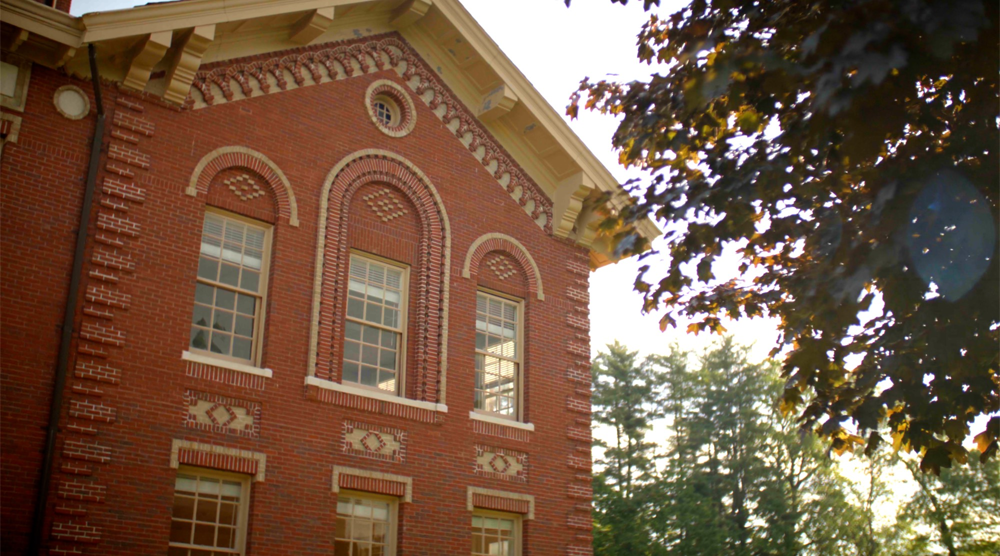
IThe Education
Rooted in the greatest works of Western civilization, our students pursue truth together — challenging their minds and forming their character.
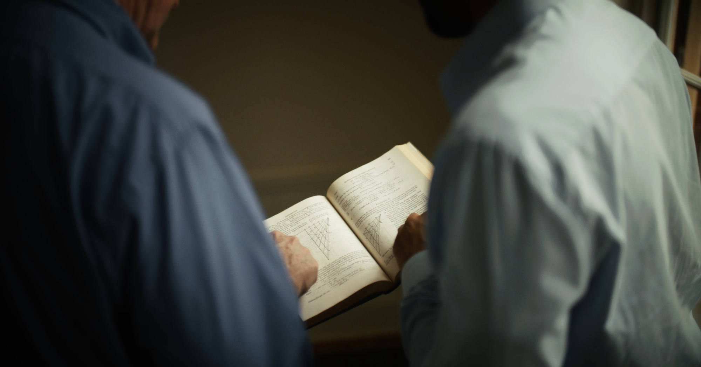
Students here do not read about Homer, Euclid, Augustine, or Newton. They read Homer, Euclid, Augustine, and Newton — the original works of the greatest minds — and then they talk about them, together, around a seminar table.
There are no lectures and no majors. Every student follows the same integrated four-year curriculum in philosophy, theology, mathematics, natural science, literature, language, and music.
Classes are small and led by tutors, not lecturers. A tutor asks a question; a student answers; another objects. Over the course of an hour, a room full of minds works its way toward the truth of the matter — and learns how to think along the way.
“Our students pursue truth together.”
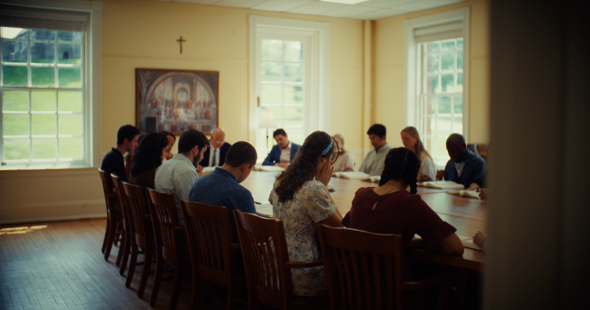
Original works, read whole, from Homer to the moderns.
Every class is a conversation among tutors and students.
Four integrated years of the liberal arts and sciences, for every student.
IICommunity
A small college in a New England village, where the same faces fill the seminar table, the dining hall, and the chapel, and friendships deepen with every season.
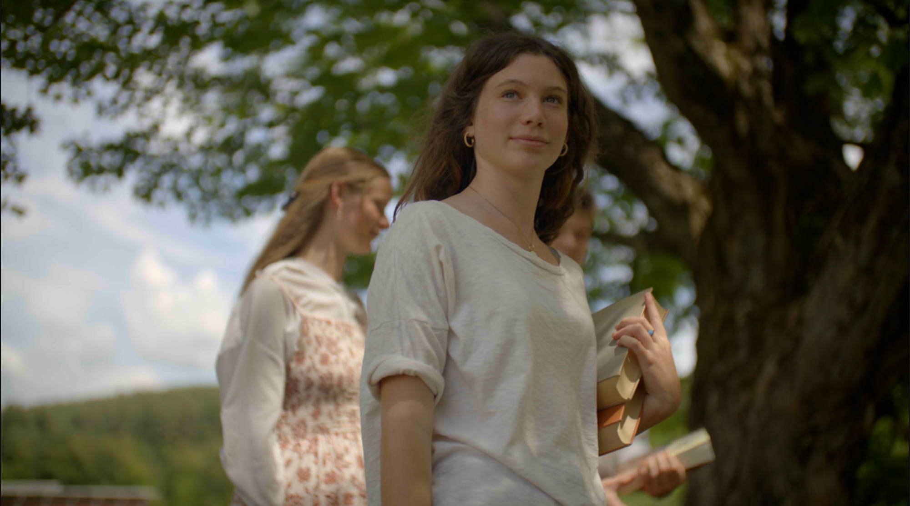
Friendships that
last a lifetime.
Life together
Students live on campus, share meals in the commons, and carry the morning’s seminar into lunch, the afternoon walk, and conversations that run late into the night.
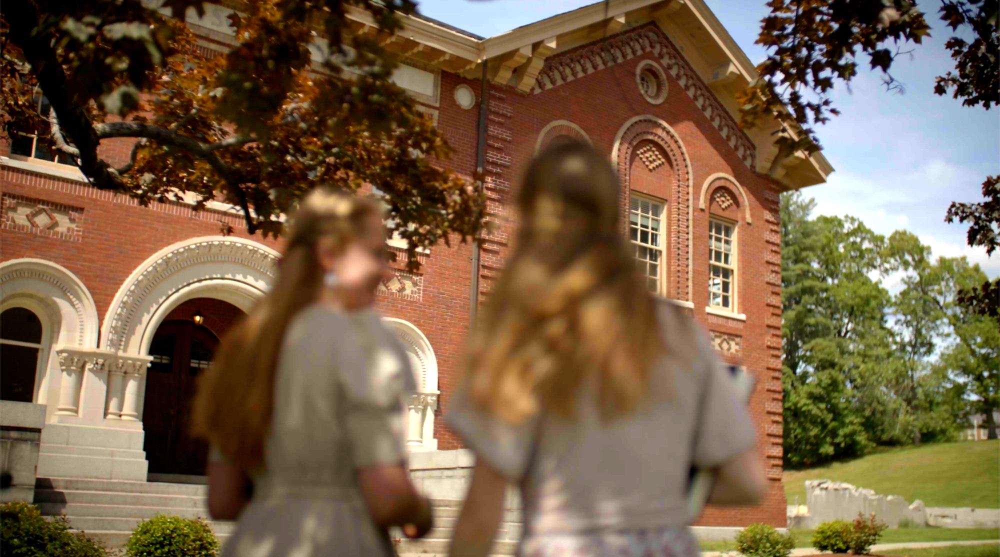
IIIThe Heart of It All
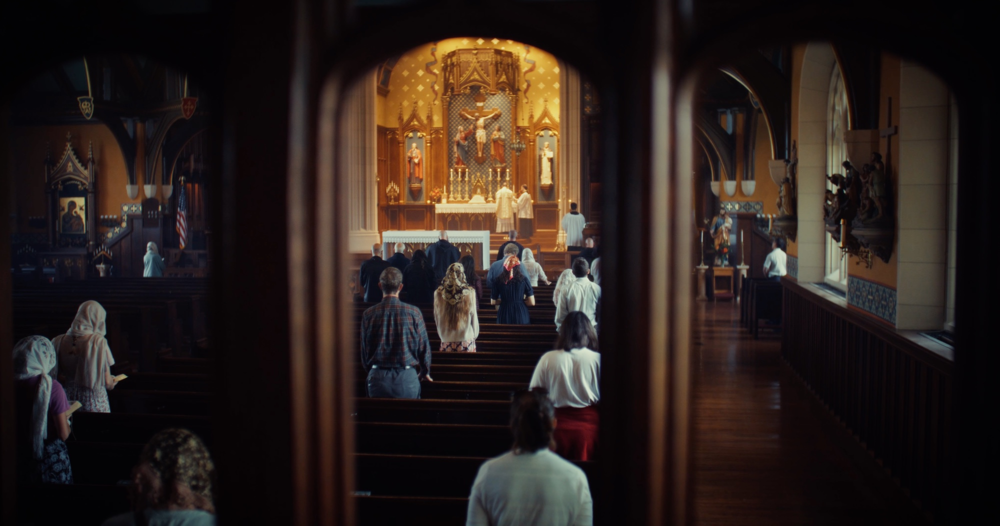
Pulchra enim dicuntur
quae visa placent.
Those things are called beautiful which please when seen.
St. Thomas Aquinas · Summa Theologiae I, q. 5, a. 4
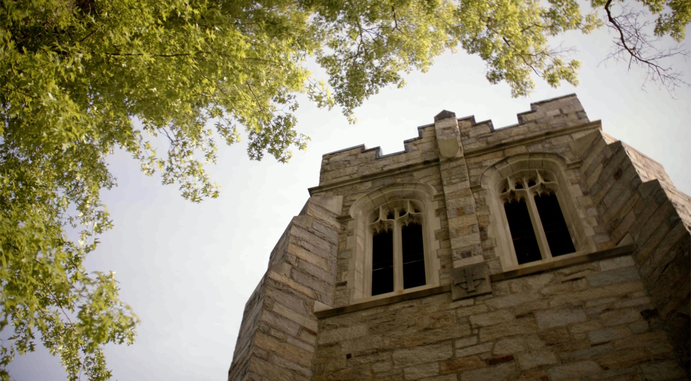
With beautiful chapels, dedicated chaplains, and daily opportunities for prayer and the sacraments, faith is woven into every part of life.
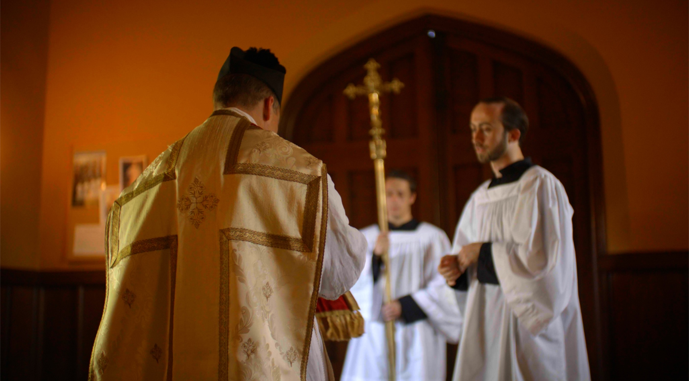
Daily Mass. Confession. Adoration. The Rosary said among friends. Here the life of the mind and the life of prayer are not two lives, but one — fides quaerens intellectum, faith seeking understanding.
IVBetween Classes
It follows the tutors down the stairwell, into the library, and out under the trees.
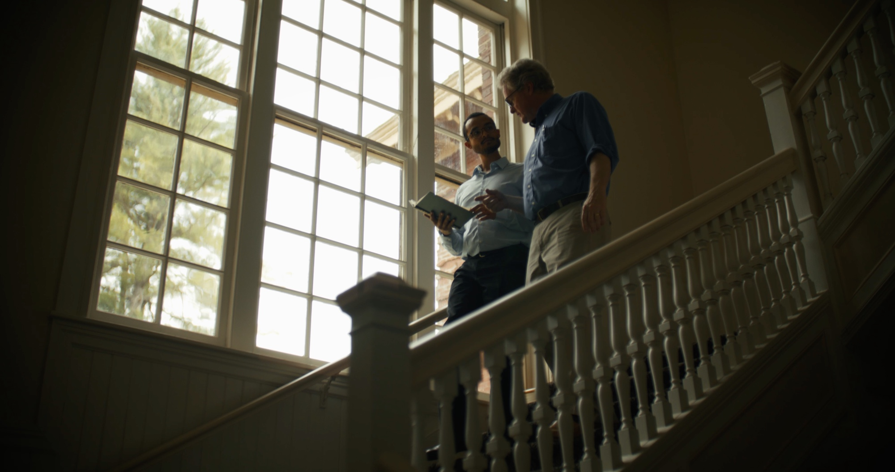
A desk in a bay window, a few hours before seminar, and nothing between you and the book but the light through the trees.
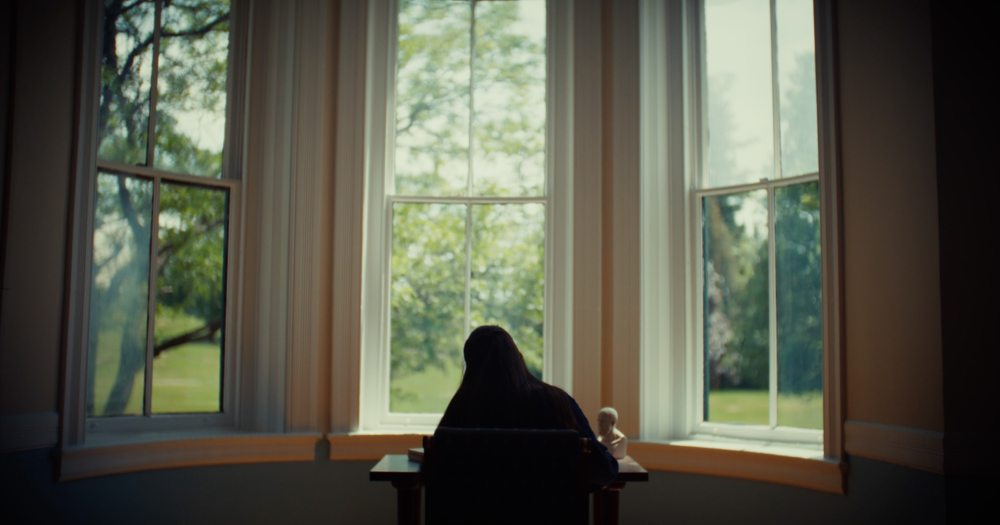
The New England Year
The first seminars of the year, beneath maples turning red and gold.
Snow on the fieldstone, lamplight in the windows, and long evenings with Aristotle.
The lawns return, and the conversation moves outdoors.
Long light over the green hills above the Connecticut River.
VYour Visit
Spend a day on the New England campus. Sit in on a class, share a meal, and meet the students who will tell you what it’s really like.

In the classroom
Take a seat at the seminar table. Listen in, or join the conversation — the tutors will be glad to hear from you.
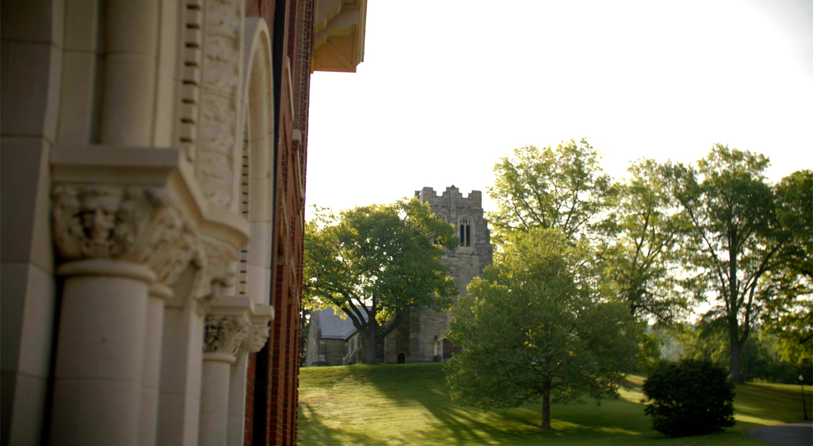
On the campus
From the brick halls to the stone chapel on the hill, see the place where four years of study, prayer, and friendship unfold.
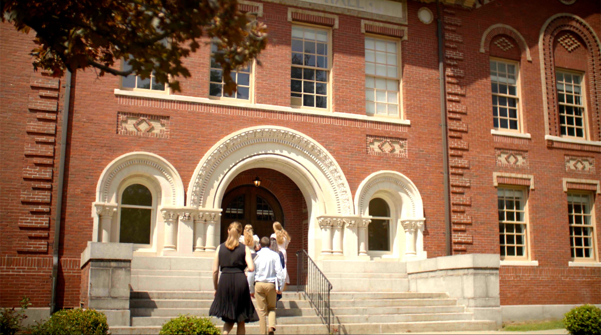
Thomas Aquinas College
An invitation
Meet our students. Join a class. Discover the community. We invite you to experience Thomas Aquinas College, New England, firsthand.